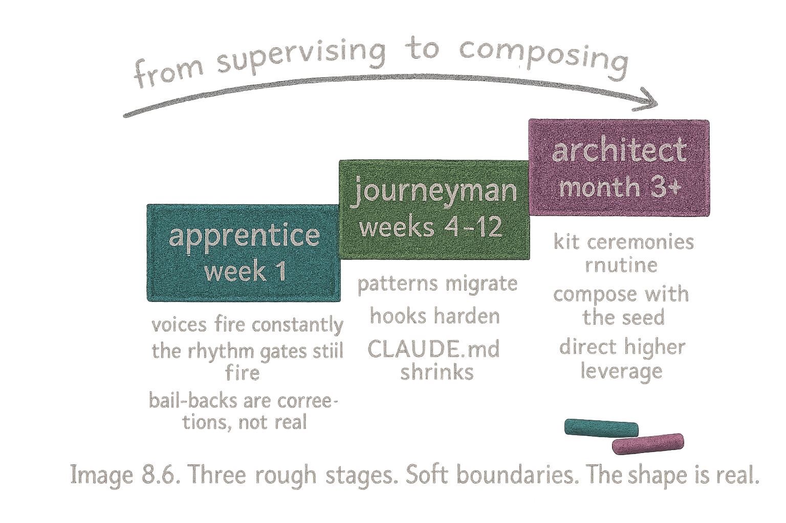

The Maturation Arc — Apprentice, Journeyman, Architect
Essay 8.6 — From Apprentice to Architect, Part 6 of 9.
Essay 8.5 drew the honest line between enforced size caps and CONDENSE discipline. Both lines describe the brain’s maturation. This essay shifts to the operator’s arc — the parallel three-stage path you walk while the seed grows around you.
The job-maturation arc from Essay 8.2 describes the jobs. The operator-relationship arc — apprentice, journeyman, architect — here describes the operator. The two arcs run in parallel — most apprentice operators are mostly running stage-1 jobs; most architects are mostly running stage-3+ jobs. ⓘ
A real-estate broker operating a brand-new seed will pass through the same arc a research scientist does, just with different artifacts: the broker’s apprentice cycles fight the rhythm gates; the broker’s journeyman cycles graduate a comparable-pricing job into multi-cycle; the broker’s architect cycles author a comparative-market-analysis plugin that exists nowhere else. The visible markers below are universal to the arc; the substance attached to each marker is the operator’s domain. The week-and-month timelines below are heuristic — an intensive operator compresses them; a part-time operator stretches them.
Apprentice
Week one. You are figuring out the shape of OPEVC — when to advance phases, when to bail back, what the rhythm gates are pushing for in practice. Most cycles end in some form of intervention. The agent gets stuck on a phase gate, and you tell it what to do. It misreads scope, and you re-orient it. It writes prose into the wrong CLAUDE.md, and you point it at the right one. The voices speak to the agent constantly because the patterns are not yet ingrained. ⓘ
This is the loud phase of cognitive growth — hooks firing on every tool call, voices coaching at every phase entry, blocks landing whenever the agent reaches for a tool the current phase forbids. Most of what you read in chat is the brain talking to the agent about the brain. The signal-to-noise ratio is bad on purpose — every misfire is a teachable moment, and the brain is busy teaching. Almost every job at this stage is stage-1 deep single-cycle. The seed is in learning mode; you are in teaching mode. Together you build the experiential data the seed will compress into its knowledge layer at cycle close. ⓘ
The lessons are accumulating in three places: the knowledge directory under .claude/knowledge/<topic>/, the memory layer in your home directory, and each plugin’s docs/evolution.md. The brain is bigger at the end of week one than it was at the start — apprenticeship grows by accretion. ⓘ
Journeyman
Weeks four through twelve, roughly. Cycles are smoother. The agent has internalized OPEVC discipline. The rhythm settles — reads and writes alternate without the gates firing. Phase advances happen automatically when the gate criteria are met. Bail-backs still happen, but they are typically real — the plan was wrong, not that the agent forgot to plan. ⓘ
This is when the work starts settling into repeatable shapes. A blog-writing job you ran as Stage 1 in week two, you (user-discussed) run as a repeatable Stage-2 job in week six — the seed has seen it enough times that you write the plan in advance. A research workflow you ran as Stage 1, you run as Stage 2 the same way. A stable pattern may justify a Stage-3 .yaml job. These are decisions you and the seed make together, not automatic climbs. The control patterns are also migrating — a coaching voice that has been firing in every cycle for six weeks becomes a candidate for hardening into a hook. The operator and the seed work together on these promotions, recognizing the pattern, writing the hook, watching the voice retire. ⓘ
The CLAUDE.md hierarchy starts shrinking as findings that were durable last month migrate into plugin behavior or compress into knowledge files. The knowledge directory keeps growing; the brain itself reaches equilibrium. ⓘ
Architect
Month three onward. Most cycles complete without you intervening on basics. The voices speak less, because most of what they used to say has been absorbed into hooks or moved to the knowledge layer. New plugin creation feels routine — the kit ceremony from Essay 7.8 is no longer ceremonial; it is the natural rhythm of how you respond to a new pattern. Stage-3 yaml jobs start appearing, and a few stage-4 plugin-form jobs begin to form. The operator’s role has shifted from supervising the agent’s cognition to directing it at higher-leverage problems. ⓘ
What you have now is not a chatbot that you talk to. It is a cognitive instrument that you compose with. The composition still requires intent — the seed does not decide what to work on; you do — but the cognition itself runs on rails the seed enforces.
The Prototype’s Plugin Spread
The prototype’s plugin-version spread shows this arc directly. job_core carries an early version with a modest test count — a young plugin, foundational, polished but not yet stress-tested across many cycles. plugin_integrity is at the most mature version in the brain — the most mature plugin overall, because it polices every other plugin’s edits and has been re-edited many times under its own gate. The phase plugins have converged to mature versions in the v2 range with substantial test counts each. ⓘ
Roughly several thousand tests across all currently active plugins (eleven in the prototype today). The number itself isn’t the point; the spread is. Mature plugins look different from young plugins, and the difference is visible in the test counts, in the version numbers, and in the depth of their docs/evolution.md narratives. ⓘ
The limit on this arc, like every limit in this essay series, is friction not enforcement: an operator can stay an apprentice forever by ignoring every promotion signal, or skip to architect by hardening hooks without measurement first. The seed makes the patient path easier than the impatient one; it does not refuse the impatient one.

The operator-relationship arc, mirroring the job-maturation arc and the soft-to-hard control arc. The next essay names the deeper claim that ties all three axes together: the brain stops growing in size while the knowledge layer never does.
Essay 8.6 — From Apprentice to Architect, Part 6 of 9.
Previous: Essay 8.5 — What’s Enforced vs What’s Discipline — the honest accounting of size caps. Next: Essay 8.7 — The Brain Stops Growing in Size — why the brain reaches a ceiling while the knowledge layer never does.
Comments